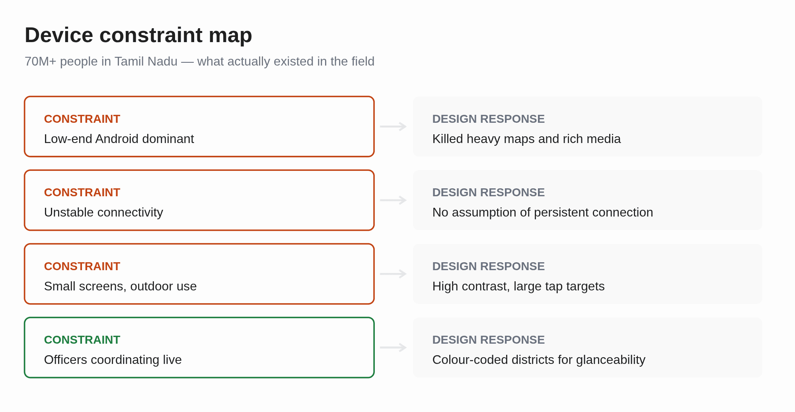
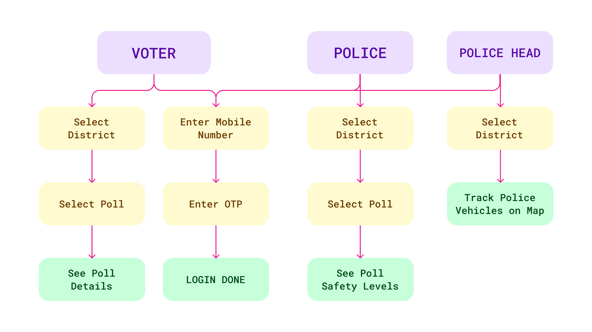
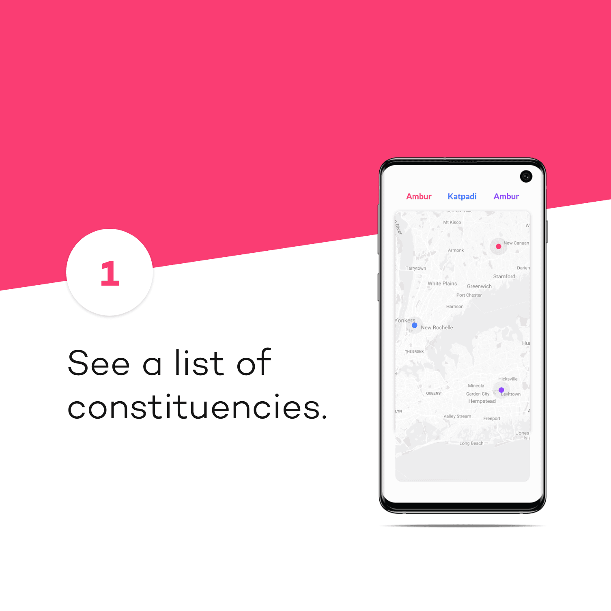
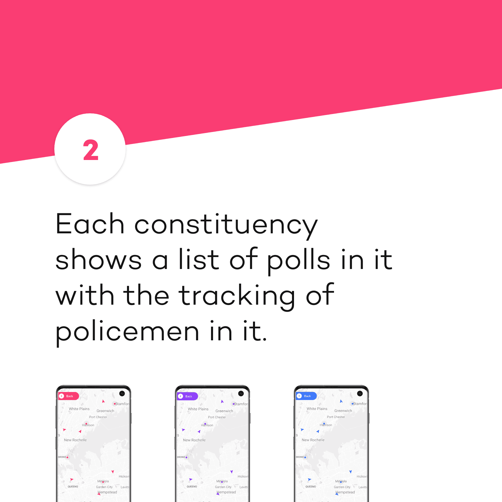
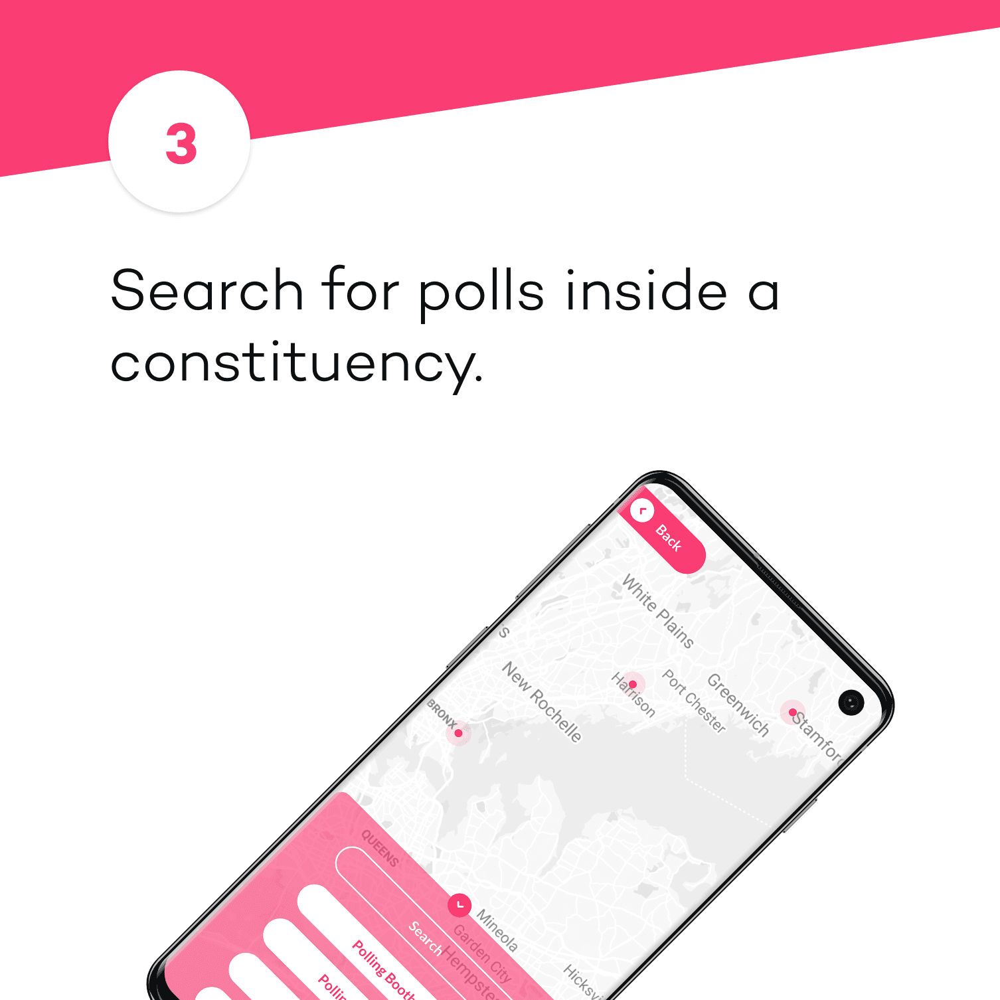

← Case Studies(07 / 14)
Poll Police
Election information for 70 million people
P
UX DesignResearch
Not everyone like's to read to much nowadays (thanks TikTok). See a comic strip?
RoleGoogle Developer Group VIT × Government of India
Timeline2019
ContextDesign Lead
ToolsFigma
People Serviced in Tamil Nadu70M+
Districts Deployed on launch Built for Low powered devices3

Not everyone like's to read to much nowadays (thanks TikTok). See a comic strip or 30 second video to understand this project?
The Problem
The Tamil Nadu Police came to us; me and four others from the Google Developer Group at VIT, where I was Community Lead. With a problem they'd identified themselves.
Two things were going wrong: People didn't reliably know where to go to vote. And in a lot of places, people didn't feel safe going; violence and pressure around polling stations were real, and the information gap made it worse. Police had their own problem: officers working the same election couldn't easily see what other officers were seeing.
Research
Field Research
We went into the field and talked to officers and to people across Tamil Nadu — specifically about what devices they were actually holding, because that would define everything else.
User base diversity
Two findings shaped the whole build. Tamil Nadu is linguistically diverse, so text-heavy interfaces exclude people by default; visuals are understood universally. And the device reality across 70 million+ people skewed heavily toward older, low-powered phones.

Understanding the users
General Voters
Find your polling station, know when it's safe. Select a district from a list or a map, zoom in, tap a station, get everything.
Police Officers on Duty
Navigate the city, track police vehicles, coordinate coverage.
Police Incharges
Oversee the operation, manage resources, see the whole picture.

The decision
We built in Flutter and designed against the worst device in the field, not the best.
What I built
Designed for the worst devices on market
That killed a lot of otherwise-good ideas early: heavy maps, rich media, anything assuming a modern handset or a stable connection. Flutter let us serve both older low-power devices and the web from one codebase, which mattered more than any individual feature would have.
Color for coordination not aesthetic
Each of the three districts got its own theme, held consistently across backgrounds and containers, with contrast tuned so even plain black text stayed effortlessly readable.
That sounds cosmetic. It isn't. An officer glancing at a colleague's screen knows the district instantly, without asking. Mid-election, that removes an entire category of miscommunication.



01 / 04
The result
People Serviced in Tamil Nadu70M+
Districts Deployed on launch3
NOTE FROM FUTURE SAMARTH
Three districts shipped. We designed for seventy million and deployed to a fraction of that, and I've never fully stopped thinking about the gap. Also I'd fight harder for a proper offline mode. We optimised for weak connections but never truly designed for no connection, which on election day in rural Tamil Nadu is not an edge case.